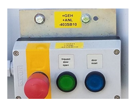
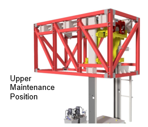
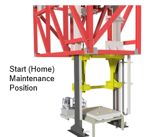

Motor Maintenance
SBS-MR-026H
Revised: 2023-06-30
Purpose/Application
Defines the procedures for performing motor maintenance for the lifting station.
PPE Required
General
Bump cap, safety glasses, hearing protection, long sleeves, safety-toed shoes.
Respirator or PAPR in case of a toxic batch material spill
Safety Hazards
Respirable Crystalline Silica

Safety Controls
- The Hazard Communication Standard (HCS) requires chemicals to have Safety Data Sheets (SDS), please refer to the SDS for chemicals listed in this SOP for additional hazards, first aid measures, toxicological information, accidental release measures, and handling/storage of the chemical.
- Review the Emergency Action Plan before performing work.
Equipment Needed
- Access to the MSK control panel
- Fire extinguisher in the cage
Comments
- Read a section thoroughly before starting the work. Personnel performing the tasks in this document must have completed the required training.
- For additional information, refer to:
- SBS-ET-026 Troubleshooting the Lifting Station
- SBS-OP-026 Operating the Lifting Station
- Vendor manuals in the Resources library
Safety Information Before Performing Maintenance
|
DANGER:
Danger of electric shock! Contact with live components
poses a risk of serious injury or even death!
|
|
|
DANGER:
Life threatening hazard due to a falling vertical carriage!
The unsecured vertical carriage can fall down and cause serious injury
or even death!
|
|
|
Warning:
Danger of injury from improperly performed maintenance!
Improper maintenance can result in serious personal injury or material
damage!
|
|
|
Warning:
Risk of injury from stored pneumatic energy! Pneumatic energy
may be stored in the machine that can lead to uncontrolled movements
of components and injuries!
|
|
|
Warning:
Danger of crushing! There are several crushing points on the
machine that can cause injuries!
|
|
|
Warning:
Danger due to non-observance of the prohibition of transporting
persons! The MSK transfer system can pose a serious risk in the
event of non-compliance and/or circumvention of the prohibition of
trans- porting persons.
|
|
|
Warning:
Risk of injury due to stored hydraulic energy! Hydraulic
energy can be stored in the machine and cause the un- controlled
movement of components, which can lead to severe in- juries!
|
|
|
Warning:
Risk of injury due to laser radiation! Laser radiation can cause serious eye damage.
|
|
|
CAUTION:
Danger of electric shock! Parts of the machine may still be live even when the emergency stop switch has been pressed!
|
Stopping and Restarting the Lifting Station
-
Note:Follow these steps to enter the fenced area:
The gate in the safety fence is equipped with a safety limit switch. When the gate is opened, an E-Stop occurs that stops the lifting station and the rest of SBS.
- Inform the operating personnel and the batch supervisor that maintenance is being performed.
- Stop the lifting station at the MSK control panel by pressing the Start/Stop button.
- In the MSK control cabinet in the control room, trip the 3 circuit breakers.
- Remove the circuit breakers.
- Lockout-tagout-verify the power per plant requirements.
- At the safety fence door, press the Request Door Open button.
- When the light turns green, open the gate. Then close it after entering.
- Press the Door Reset (blue) button.


Using Safety Bolts on the Vertical Carriage
-
There are three maintenance positions for the vertical carriage (yellow component
in the images)
- Lower Maintenance Position (top image): Use this position to safely perform most tasks on the vertical carriage, such as adjusting the guide wheels.
- Upper Maintenance Position (middle image): Use this position for working on the vertical movement.
- Start (Home) Maintenance Position (bottom image): The system returns to this position after each working cycle to wait for the AGV and batch container.
To move the vertical carriage into one of the maintenance positions- Verify that no personnel are in the safety fence area.
- Wait for the machine to finish its cycle.
- At the MSK contro l panel, switch the unit to “Manual mode.” (For details, see SBS-OP-026 Operating the Lifting Station.)
- Select the manual function “Lift all up (to top)” or “Lift all down (to bottom).”
- Move the vertical carriage up or down as needed by pressing the “Start/Stop Automatic” button on the MSK control panel.
- Move the vertical carriage until the bores on the lifting mast and on the carriage overlap.



Motor Maintenance
Approval
|
Person |
Role |
|---|---|
|
Johnathan Fisher |
SBS Manager – R&D |
|
Phillip Wilson |
EHS Continuous Improvement Manager |
|
Jeremy Singletary |
Shift Leader, Research & Development |
Revision History
| 2023-06-30 |
Approved by Johnathan Fisher, SBS Manager R&D |
|
Original Issue |